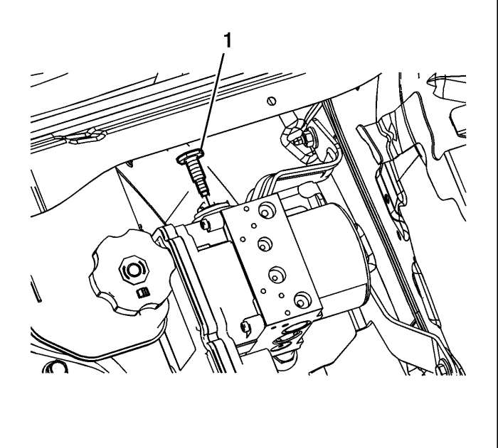
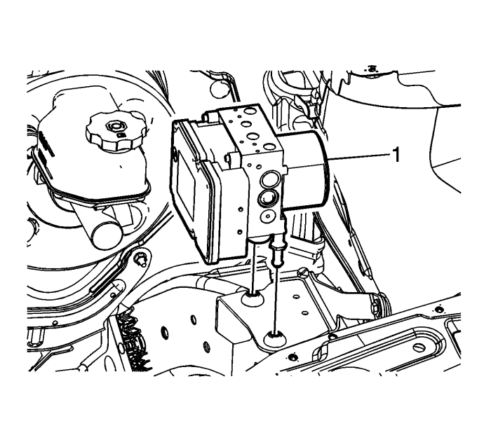
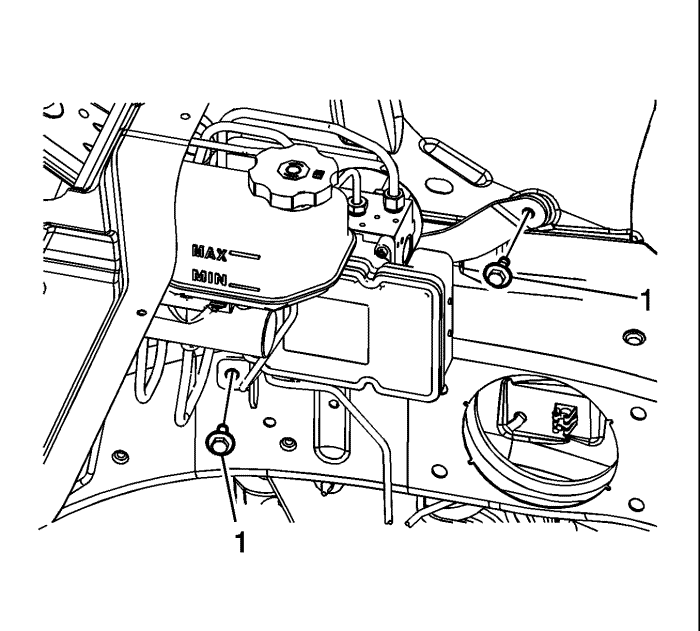
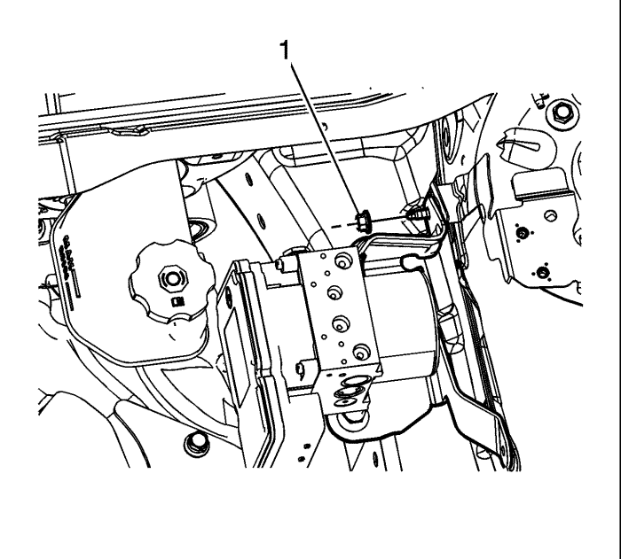

Sustitución del soporte de la válvula moduladora de presión de los frenos
Procedimiento de desmontaje
- Coloque el interruptor de encendido en la posición OFF.
- Desmonte el centro eléctrico bajo el capó. Consultar Sustitución del bloque de unión o del centro eléctrico de la parte inferior del capó .
- Sin evacuar el refrigerante ni desmontar los tubos flexibles, desmonte y sitúe a un lado la cámara de compensación del radiador. Consultar Sustitución del vaso de expansión del radiador : Diesel → Motores de gasolina .

- Desmonte el tornillo (1) de la válvula moduladora de presión del freno (BPMV).

Nota: No haga palanca en las caperuzas del acumulador situadas en la parte inferior de la BPMV.
- Sin desacoplar los racores de los tubos de los frenos, levante cuidadosamente el conjunto de la BPMV (1) para desenganchar los pasadores de fijación de los aislamientos de los soportes de la BPMV.
- Posicione el conjunto de la BPMV a un lado y sujételo con un alambre resistente u otro material equivalente.

- Retire los 2 tornillos del soporte del BPMV (1).

- Desmonte la tuerca (1) del soporte de la BPMV y el soporte de la BPMV.
- Compruebe que los aislamientos no sufren daños y sustitúyalos si es necesario.
Procedimiento de montaje
- Monte el soporte de la BPMV.
- Monte la tuerca (1) del soporte de la BPMV, sin apretarla.
Precaución: Consulte Precaución con las fijaciones en la sección Prólogo.
- Monte los 2 tornillos (1) del soporte de la BPMV y apriételos a un par de 10 N·m (89 lb pie).
- Apriete la tuerca del soporte de la BPMV a un par de 10 N·m (89 lb. pulg.).
- Posicione con cuidado el conjunto de la BPMV (1) respecto a los aislamientos del soporte de la BPMV.
- Monte el tornillo (1) de la BPMV y apriételo a un par de 10 N·m (89 lb. pulg.).
- Monte el depósito de expansión del radiador. Consultar Sustitución del vaso de expansión del radiador : Diesel → Motores de gasolina .
- Monte el centro eléctrico de la parte inferior del capó
| © Copyright Chevrolet Europe. All rights reserved |